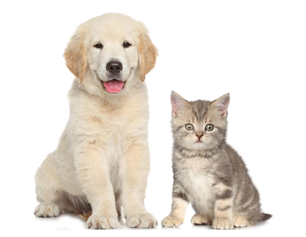
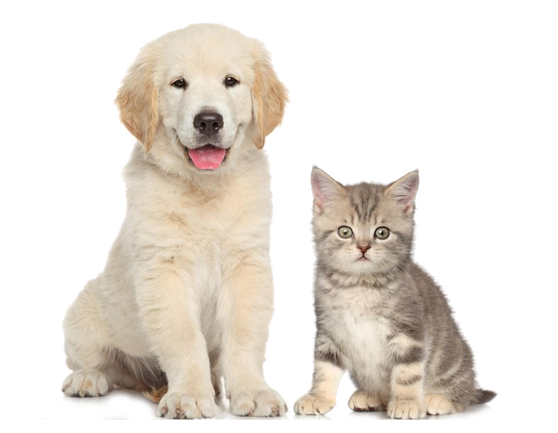
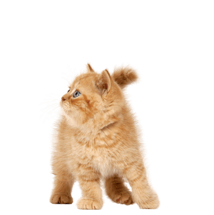
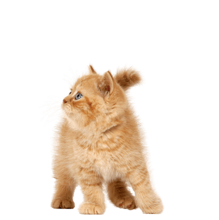

NKLA (No-Kill Los Angeles) is an initiative led by Best Friends Animal Society that brings together passionate individuals, city shelters and an entire coalition of animal welfare organizations to end the killing of dogs and cats in shelters throughout Los Angeles. Now, Los Angeles, the nation’s second largest city, is just inches away from achieving no-kill.
NKLA
 

Found Kitten?
If you find a kitten who is visibly sick or injured, seek medical attention immediately from a local veterinarian or the nearest animal shelter. During the COVID-19 outbreak, L.A. area shelters are continuing to take in emergency cases. Here is where to start.
 

No Kill City
Together we made LA a NO-kill city. Can you imagine an America where no pet is killed in a shelter again simply for being unwanted? We can. Led by Best Friends Animal Society, the NKLA initiative is poised to serve as a model for how the entire nation can become no-kill, with no pet ever having to die in a shelter again simply because they do not have a home.